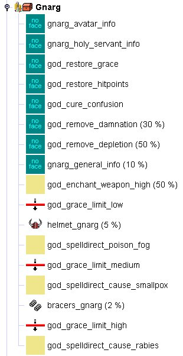

Some treasurelists are used for special purposes. These can be found in the sub-folders "God Intervention", "Dragon Player Evolution" and "Player Creation". They cannot be used in maps.
The "God Intervention" lists are of special importance. They define which bonuses the Daimonin gods donate to their worshippers. These lists are traversed from top to bottom and the grace_limit objects are only passed when the worshipping player has a certain amount of grace.
Below you see the treasurelist of the god Gnarg (as of 24.10.2002, the list might have changed in the meantime).
